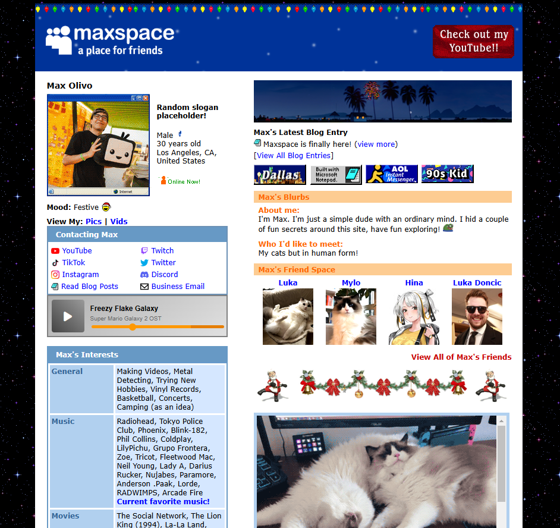

After a long week of coding, my personal take on a "linktree" website is finally live. I've called it Maxspace, and it's tragically dated, yet beautiful. The design is heavily inspired by the 2005-era Myspace default profile layout—essentially a direct homage.
What's the point tho? 🤔
I wanted a personal home on the internet separated from the noise of social media, free from scrolling and distractions. Maxspace will serve as my quiet and nostalgic corner on the internet.
How'd you do it?
So tbh, I'm not a coder. So please excuse the use of deprecated code, or any other bad habits you may spot if you snoop through the source code. That said, I poured a lot of love (and time with ChatGPT) into re-creating the classic Myspace look, from the layout and fonts to the colors. I even exported a lot of the still images as .gifs with low settings to get that compressed dithered look.
Back in 2005, when I was glued to Myspace.com, I went out of my way to heavily customize my profile page. I stripped out the Myspace branding, used code to hide the baked-in links to make it look like a completely custom website. And now, almost two decades later, here I am meticulously recreating the default Myspace layout.
Hidden easter eggs 🥚
I've tucked a few secrets and additional pages throughout the website, including a page for my current favorite music. I'm also planning to add more “hidden shrine” pages. Have you found the ones for my cats, Luka and Mylo?
I'll keep Maxspace updated with new photos, blog posts, and more. But for now... website-building hyperfixation complete.